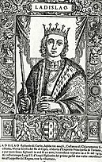

Ezt az enciklopédiát az olvasói szerkesztik. A magyar változatnak 524 706 szócikke van, ebből 1051 kiemelt.

László nápolyi király (olaszul: Ladislao il Magnanimo di Napoli) (Nápoly, 1376. július 14. vagy 1377. február 15. – Nápoly, 1414. augusztus 6.) nápolyi király (1386-1414),
Magyarországon Nápolyi Lászlóként ismert, Kis Károly magyar és nápolyi király fia, magyar trónkövetelő és ellenkirály.
Nápolyban apja magyarországi meggyilkolása után lépett trónra. A nápolyi Anjou-ház Durazzói ágának utolsó alakja.
Küzdelmes, nagyrészt csatatereken eltöltött élete szorosan összefonódik a pápaság kritikus időszakának történetével.
Hadjárataiban Róma és vele egész Itália megszerzésére és egyesítésére irányuló törekvés figyelhető meg.
Magyarországon hosszú ideig jelentős párttal rendelkezett. 1403. augusztus 5-én Zárában magyar királlyá koronázták.
Az eddigi tevékenysége – magyar királyi cím felvétele, a főrendek levélben történő megkeresése, dalmát-horvát bánok kinevezése,
adományozások, amnesztia hirdetése – valójában csak jogcímének és délvidéki pártjának fenntartására szolgált, mely a Zsigmonddal
szemben feltörő elégedetlenség miatt néhány esetben – Lackfiak 1396. évi balsikerű fellépése – ennél nagyobb látszatot keltett.
Az 1403. évi sikertelen fellépése után, felismerve a két királyság egyesítésének – már elődei által is megtapasztalt – problémáit, érdeklődése teljesen Itália felé fordult.
A már Johanna alatt bomlásnak indult balkáni – és később magyar – területeket jogai átengedésével és eladásával, céljai elérésére használta.
Magyarországi kísérlete egyben a magyar Anjou-kor végét is jelentette, a győztesek által írt hazai történelem a személyét és beavatkozását is homályos, kedvezőtlen színbe burkolta.
Jellemét, hajlamait és politikáját tekintve a ház alapítójának, Anjou Károlynak vonásai ismerhetők fel benne. Hódításait utódai nem tudták megtartani.
Május 14-én a törökországi elnökválasztáson sem a hivatalban levő elnök, Recep Tayyip Erdoğan, sem Kemal Kılıçdaroğlu, az ellenzék jelöltje nem tudta megszerezni a szavazatok több, mint 50%-át, ezért május 28-án második fordulóra kerül majd sor. Május 13-án a svéd Loreen nyerte az idei Eurovíziós Dalfesztivált Tattoo című dalával. Május 7-én Ódor Lajost nevezte ki Szlovákia miniszterelnökévé Zuzana Čaputová államfő, miután Eduard Heger benyújtotta lemondását. Ódor május 15-én foglalja el hivatalát. Május 6-án a westminsteri apátságban megkoronázták III. Károly brit királyt és Kamilla királynét. Április 19-én az ENSZ bejelentette, hogy a rendelkezésre álló adatok szerint India népessége megelőzte Kínáét, amely így a második helyre szorult.
Az év aktualitásai: 2022-es orosz invázió Ukrajna ellen